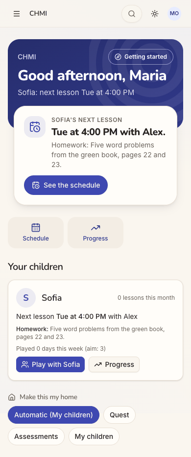
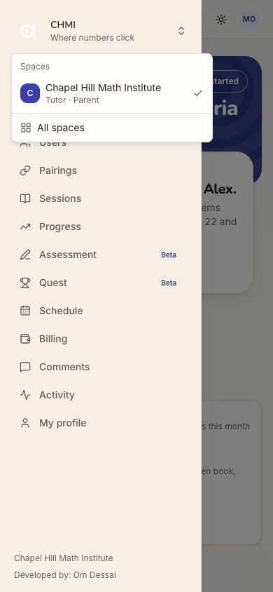
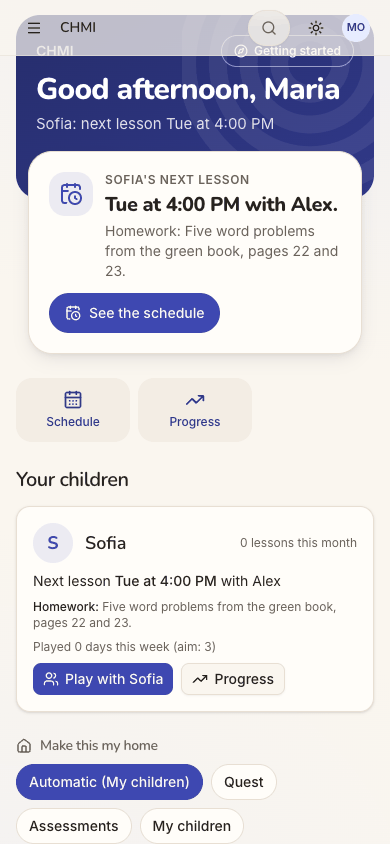
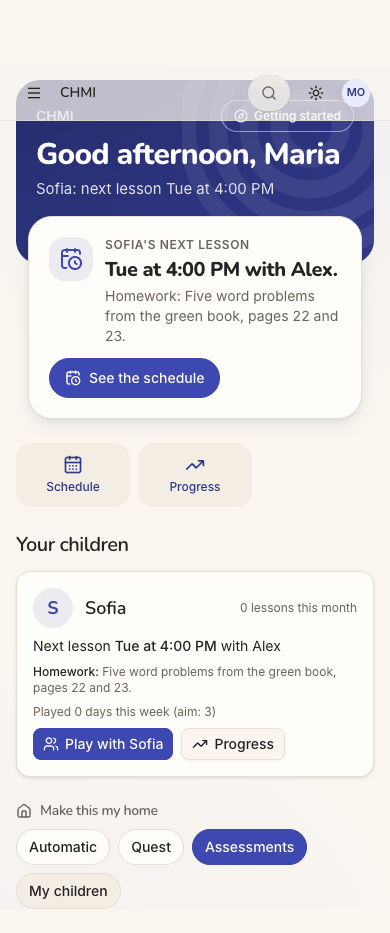
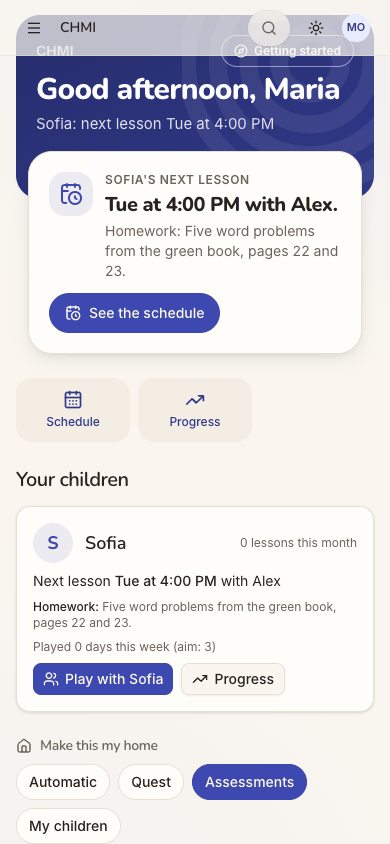
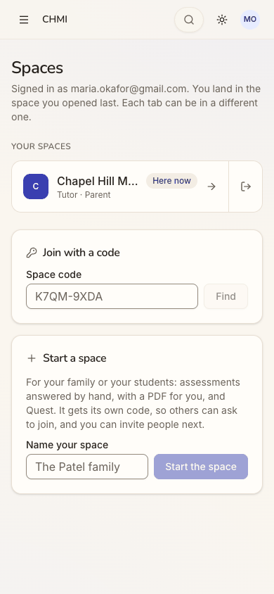
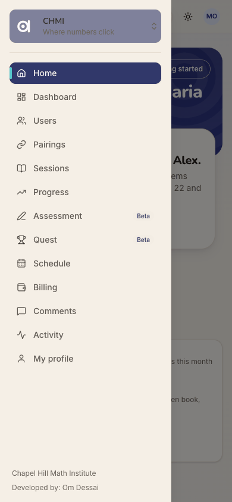
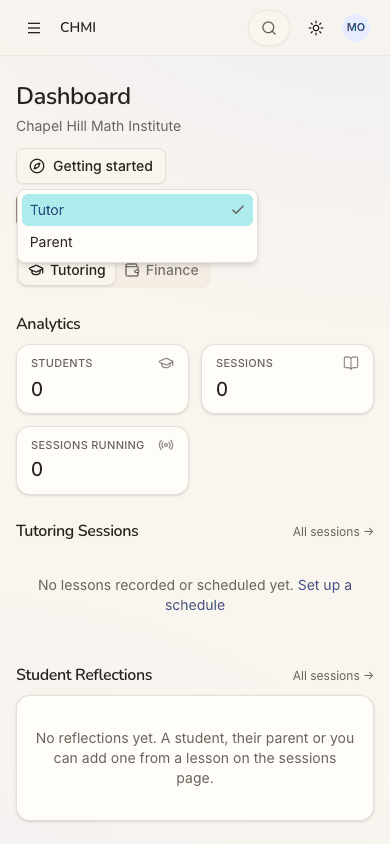

Who: Maria Okafor, a seeded person at Chapel Hill Math Institute (CHMI). She is Sofia's mother and also a tutor there. She belongs to cohort C8, several roles ("What's urgent across my hats?") in docs/member-home-plan.md. The contract for that cohort: the most time-bound item of any hat wins Next up, and each hat gets its own section. She wants to sign in and see Sofia's lessons and her own teaching in one place. She also wants to know where to go for each.
Outcome: 1/1 journeys passed, 0 skipped, 15 of 15 steps verified. Maria saw everything the journey asks for:
the home (steps 3-4);
the space switcher (step 6);
All spaces (step 7);
the Dashboard, in both its views (steps 8-10, 14).
She also tried "Make this my home" (step 12). After a reload (step 13) the pin was still saved, but the home had not changed.
Which hat leads: the parent hat, and only the parent hat. It leads because it is the only hat with anything in it:
The home's chip reads "Automatic (My children)".
Next up is "Sofia's next lesson, Tue at 4:00 PM with Alex".
"Your children" is the only section on the page.
Her tutor hat never appears on the home: there is no section, no "Teaching" choice and no empty line. The reason shows only on the Dashboard: "No students assigned to you yet." Elsewhere the app does know she teaches. The switcher and All spaces both label her "Tutor · Parent", and the Dashboard opens as "Tutor". So the home and the Dashboard pick opposite hats: the home picks the hat with content, and the Dashboard opens on the empty one.
Can she tell where to go for what? Only partly:
The switcher: one space and "All spaces". With one space there is nothing to switch to.
All spaces: her role and "Here now". It also offers "Start a space … for your students", which is a tempting
wrong door for a tutor.
The Dashboard: the only place with what she acts on as a parent: $152.50 outstanding, and Sofia "Behind" on her
plan. She gets there only by changing an unlabelled "Tutor" dropdown to "Parent", and the Dashboard forgets that choice on her next visit.
Conversion figures (counted from the entry point, / signed out):
Stretch
Screens
Taps
Typed fields
Waits
Dead ends
Entry to the home inside CHMI (steps 1-3)
3
2
0
0
0
Entry to her real data as a parent, the Dashboard's Parent view, shortest path (steps 1-3, 8-10)
6
7
0
0
1
Whole run, 15 steps
8 distinct (11 views)
18
0
1
3
Conversion and stickiness:
Conversion into the space: immediate. One Google tap lands her in CHMI with no space picker.
Conversion to a tutor feature: none. Nothing on the home or the Dashboard gives a tutor without students a next
step.
Stickiness as a parent: decent. The home shows Sofia's next lesson with its homework, and "Play with Sofia". The
week's "Played 0 days (aim: 3)" gives a reason to come back.
Stickiness as a tutor: nothing pulls her back.
The 3 screens Maria would notice most:
Step 3, the home after sign-in. Everything on it is about Sofia, and nothing says Maria teaches here. Cohort C8
expects one section per hat, and she gets one section for two hats. step 3
Step 8, the Dashboard. It opens on "Tutor": three zero counts, "No lessons recorded or scheduled yet" and "No
students assigned to you yet". For someone with several hats, the first page is the empty one, with only a bare dropdown hinting at another view. step 8
Step 10, the Dashboard's Parent view. This is the page she would act on: $152.50 outstanding, and Sofia "Behind"
on her plan, at 11% with 2 of 18 planned sessions held. It is reached only through the dropdown, and at phone width its Recent sessions rows overlap ("wi2026-09-15"). step 10
The Dashboard opens on her empty Tutor view and forgets the Parent choice
Issue
Menu → Dashboard opens with the role dropdown set to "Tutor". That view shows:
STUDENTS 0, SESSIONS 0, SESSIONS RUNNING 0;
"No lessons recorded or scheduled yet";
"No students assigned to you yet";
and, as its only Recent Activity, Maria's own "opened Chapel Hill Math Institute".
Her real data is under "Parent", the second option of an unlabelled dropdown: Sofia, $227.50 charged, $152.50 outstanding, the progress plan "Behind", two recent sessions and a payment. Choosing Parent only puts ?role=parent in the URL. The menu's Dashboard link drops it, so the next visit (step 14) opens on the empty Tutor view again. The home led with the parent hat. The Dashboard leads with the other one.
Violation
cuj-contract, steps 8 and 14 (cohort C8: what is urgent across her hats should lead). Nielsen #6 Recognition rather than recall, because she has to remember to switch every visit. Nielsen #4 Consistency and standards, because the home and the Dashboard pick opposite hats.
Severity
A workaround is needed on every visit. For a parent who is also a tutor, the Dashboard's first
screen is a page of zeros. The page she acts on (what she owes, and that Sofia is behind) is one hidden choice away, and the home never mentions it. A C8 person who gives up at the zeros never finds it.
Evidence
step 8step 10step 14 Repro:
Sign in as Maria Okafor.
Open the menu and choose Dashboard: it shows "Tutor", all zeros.
Change the dropdown to Parent: the URL becomes /dashboard?role=parent and the data appears.
Open the menu and choose Dashboard again: it is back on "Tutor".
Fix
Choose the Dashboard's opening role the way the home chooses its lead: the hat with content (here Parent). Better
still, follow the home's focus or pin.
Remember the last role chosen per person and space, as the tab's ?tab= already does for Tutoring/Finance. Make the
menu link carry it.
Give the dropdown a visible label ("View as") so a second view is discoverable.
Leave out the reader's own "opened the space" lines from Recent Activity. For a tutor with no students they are the
only content.
sev2
The home ignores her tutor role: no section, no Teaching choice, no next step
Issue
Maria holds the tutor role in CHMI. The switcher and All spaces say "Tutor · Parent" (steps 6 and 7). Yet the home has:
no tutor section;
no "To record";
no empty line;
no "Teaching" chip under "Make this my home" (the chips are Automatic (My children), Quest, Assessments and My
children).
Nothing on the home says why. The reason, "No students assigned to you yet", appears only in the Dashboard's Tutor view (step 8). A tutor who has just been added and is waiting for students gets no sign that the space knows she teaches, and no next step.
Violation
cuj-contract, steps 3 and 4 (cohort C8: "one section per hat"). Nielsen #1 Visibility of system status: her tutor status, and the fact that she has no students yet, is invisible where she lands.
Severity
This is an observable mismatch and real friction, not a blocker. For this cohort the home's promise
is one view across her hats, and half of her role is missing. The cost falls on conversion to teaching: a new tutor is told nothing about what happens next.
Evidence

step 4

step 6

step 11 Repro:
Sign in as Maria Okafor and dismiss the tour.
Scroll the home: "Your children" is the only section, and the chips have no Teaching.
Open the switcher: it says "Tutor · Parent".
Fix
When a person holds the tutor role here but has no pairing in force, show a one-line "Teaching" section. For
example: "No students yet. When the office pairs you with a student, their lessons appear here."
Offer "Teaching" in "Make this my home" whenever she holds the role.
Keep the hat order rule (the hat with something today first), so the parent hat still leads today.
sev2
"Make this my home" changes nothing she can see and says nothing
Issue
Maria had no Teaching choice, so she pinned "Assessments", the nearest thing to a tutor's tool. The chip turned selected and "Automatic (My children)" became plain "Automatic". Nothing else on the page changed:
the same Next up (Sofia's next lesson);
the same quick actions;
the same single section;
no Assessments block;
no toast, and no line saying what the pin does.
After a reload (step 13) the pin was kept, so it was saved, but the home was still identical. Setting it back to Automatic (step 15) was just as silent.
Violation
cuj-contract, steps 12 and 13. Nielsen #1 Visibility of system status, because a saved preference gets no acknowledgement. Nielsen #2 Match between system and the real world, because the control promises "make this my home" and the home does not change.
Severity
Real friction. She cannot tell whether the control works. For C8, whose question is "what leads my
home?", the one control meant to answer it gives no feedback. That is a dead end (she undid it).
Evidence
step 11

step 12

step 13 Repro:
On the home, scroll to "Make this my home" and tap "Assessments".
Compare the page with before: identical.
Reload: "Assessments" is still checked, and the page is still identical.
Fix
Acknowledge the pin, for example with a toast: "Your home now leads with Assessments".
Add a one-line hint under the chips saying what a choice does.
When the pinned focus has nothing to show, say so where its section would be ("Nothing in Assessments yet. Start
one for a student"), so the change is visible.
Do not offer a focus that would put nothing on her page.
sev2
"Sign in" opens a sheet titled "Sign up free"
Issue
On the signed-out page Maria taps the header's "Sign in". The sheet that opens is titled "Sign up free", with "Keep your scores, unlock every quest and play with your family". Its only action is "Continue with Google". She already has an account at the institute.
Violation
cuj-contract, step 2. Nielsen #4 Consistency and standards: the sheet's title does not match the button that opened it.
Severity
An observable mismatch at the door. A tutor or parent with an existing account hesitates over
whether this will create a second one. For this cohort the copy also speaks to a child player, not to a member of a tutoring space.
Evidence
step 2 Repro:
Open / signed out.
Tap "Sign in" (top right).
Fix
Title the sheet by the button that opened it: "Sign in", with a line such as "Use the Google account your space knows". Keep "Sign up free" for the sign-up buttons. One Google button can still serve both.
sev2
Recent sessions rows overlap on the parent Dashboard at phone width
Issue
At 390 px, the Dashboard's Parent view squeezes "Sofia Okafor with Alex Chen" into a narrow column of Recent sessions, one word per line. The word "with" is drawn over the date, which reads "wi2026-09-15 · 1 hr 30 min". The badge and the amount take the rest of the row.
Violation
cuj-contract, step 10. Nielsen #8 Aesthetic and minimalist design. Legibility: overlapping text on a row that carries money.
Severity
An observable defect on the one page that shows a parent what each lesson cost. The date of a
billed lesson is unreadable. The page does not overflow sideways, so responsive.spec.ts would not catch it.
Evidence
step 10 Repro:
Sign in as Maria Okafor on a phone-width window.
Open the Dashboard and choose Parent.
Scroll to Recent sessions.
Fix
Below sm, stack the row: names on one line, then date · length · location badge, then the amount right-aligned, or under the names. Give the text column min-w-0 with wrapping instead of a fixed squeeze. Add an overlap check (no two text boxes intersecting) to the responsive spec for this panel.
sev1
All spaces: the space name is truncated and Leave is an unlabelled icon beside Open
Issue
On All spaces at phone width, her only space reads "Chapel Hill M…". The "Here now" badge, the open arrow and an icon-only exit button take the rest of the row. The exit button, named "Leave Chapel Hill Math Institute" for screen readers, has no visible label, and no tooltip appeared on hover. It sits a thumb's width from the open arrow.
Violation
cuj-contract, step 7. Nielsen #6 Recognition rather than recall: an icon-only destructive action.
Severity
Cosmetic as observed. She can still tell which space it is from the menu, and Leave was not
pressed, so whether it asks for confirmation was not checked. For a member of one space, the unlabelled door icon next to Open is the only visible way out.
Evidence

step 7 Repro:
Sign in as Maria Okafor.
Open the menu, then the space card, then "All spaces", at 390 px.
Fix
Let the name wrap to two lines, or move "Here now" under it, on phones. Give Leave a text label ("Leave") or move it into an overflow menu. Keep a confirmation step.
Walkthrough
Step 1 — Open http://localhost:8797/ signed out (landing) Expected: a way in for an existing member. Observed: the guest Play home: "Math quests. Hit the target.", Today's 5 for Grade 4, a grade row and tiles. A small "Sign in" outline button sits top right, and "Sign up free" is the big white call to action. Desktop and dark mode show the same.Step 2 — Tap "Sign in" Expected: a "Sign in" sheet. Observed: a sheet titled "Sign up free" ("Keep your scores, unlock every quest and play with your family"), with one "Continue with Google" button and a close X.Step 3 — Tap "Continue with Google" (landing: the first screen inside a space) Expected (C8): the most time-bound item of either hat in Next up, and a section per hat. Observed: she goes straight into CHMI with no picker. The page shows: - the band, "Good afternoon, Maria / Sofia: next lesson Tue at 4:00 PM"; - Next up, "Sofia's next lesson: Tue at 4:00 PM with Alex." with the homework and "See the schedule"; - the quick actions Schedule and Progress; - one section, "Your children". A "New here on this device?" tour offer covers the bottom of the phone screen. The desktop sidebar lists Home, Dashboard, Users, Pairings, Sessions, Progress, Assessment, Quest, Schedule, Billing, Comments, Activity and My profile.Step 4 — "No thanks" to the tour; the whole home (full page) Expected: one section per hat. Observed, in order: the band, Next up, two quick actions, "Your children" (Sofia: 0 lessons this month, the next lesson, the homework, "Played 0 days this week (aim: 3)", Play with Sofia, Progress), then "Make this my home" with Automatic (My children) checked, Quest, Assessments and My children. There is no tutor section and no Teaching choice.

Step 5 — Open the menu Expected: navigation and a space switcher. Observed: a drawer. At the top is the space card "CHMI / Where numbers click" with an up-down chevron (named "Switch space"), shown in a muted purple with grey text on it. Below it are the 13 menu items, and the footer reads "Chapel Hill Math Institute / Developed by: Om Dessai".Step 6 — Tap the space card (the switcher) Expected: her spaces and a way to the others. Observed: a "Spaces" menu with one item, "Chapel Hill Math Institute, Tutor · Parent", checked, then "All spaces". While it is open, the space logo in the card turns white on cream and is nearly invisible.Step 7 — Tap "All spaces" (landing) Expected: her spaces and her role in each. Observed: "Spaces", with "Signed in as maria.okafor@gmail.com. You land in the space you opened last. Each tab can be in a different one." Below that: - YOUR SPACES: "Chapel Hill M…", Here now, Tutor · Parent, an open arrow and an icon-only Leave; - "Join with a code"; - "Start a space", "For your family or your students: …". On desktop the name is shown in full.Step 8 — Menu → "Dashboard" (landing) Expected: her dashboard, with a clear choice between her roles. Observed: "Dashboard / Chapel Hill Math Institute", "Getting started", an unlabelled dropdown set to "Tutor", and the tabs Tutoring and Finance. Tutoring shows: - Students 0, Sessions 0, Sessions running 0; - "No lessons recorded or scheduled yet. Set up a schedule"; - "No reflections yet"; - "No students assigned to you yet"; - Recent Activity: her own "opened Chapel Hill Math Institute".

Step 9 — Tap the "Tutor" dropdown Expected: the available views. Observed: a list with "Tutor" (checked) and "Parent".Step 10 — Choose "Parent" (full page) Expected: Sofia's lessons, progress and money. Observed: the URL becomes /dashboard?role=parent, with no Tutoring/Finance tabs. The page shows: - Children 1, Charged $227.50, Outstanding $152.50 ($75.00 paid); - Your children; - Sofia's progress plan, "Behind", 1 of 9 topics mastered, 2 of 18 planned sessions held, a chart at 11%; - Recent sessions (2026-09-15, $127.50; 2026-09-08, $100.00, "You pay"); - Your payments (Sep 9, Zelle, $75.00). At 390 px the Recent sessions names wrap one word per line, and "with" overlaps the date.Step 11 — Menu → Home; scroll to "Make this my home" Expected: a way to make the home lead with what she does. Observed: the chips Automatic (My children), Quest, Assessments and My children, with no Teaching and no explanation. Scrolled, the translucent sticky bar sits over the band's "CHMI / Getting started".Step 12 — Tap "Assessments" (full page) Expected: the home re-orders to lead with Assessments, with some acknowledgement. Observed: "Assessments" is selected and "Automatic" loses "(My children)". Everything else is identical: Next up, quick actions and sections. No Assessments block appears, and there is no toast.Step 13 — Reload the home (end-state check) Expected: the pin is kept and the home leads with it. Observed: "Assessments" is still checked, so the pin was saved, and the home is unchanged from step 4.Step 14 — Menu → Dashboard again Expected: the Dashboard remembers "Parent" from step 10. Observed: /dashboard opens on "Tutor" again, all zeros. "Getting started" carries the cyan focus highlight.Step 15 — Menu → Home; set "Make this my home" back to Automatic Expected: back to "Automatic (My children)". Observed: "Automatic (My children)" is checked and the home is as before. There is no acknowledgement. This also restored her preference as it was before the audit.
1 / 15
Appendix
Mode: live. The web app at http://localhost:8797 is a frozen copy of commit 2d6e7d3 with sign-in on. It was
driven in headless Chrome at 390×844 (phone), plus 1280×800 and dark mode at the landing steps (1, 3, 7 and 8).
Frameworks applied:
cuj-contract: every step against its expected result, including the C8 contract of one section per hat.
task-completion: the journey ran to its defined end (home, switcher, All spaces, Dashboard), with "Make this my
home" tried.
success-criteria: the end state was checked again after a reload at step 13 (the pin was kept and the home was
unchanged), and on a second visit to the Dashboard at step 14 (the role choice was not kept).
CUJ manifest: J18, 15 steps, all observed (15 of 15 verified). Steps 2, 3/4, 8, 10, 12/13 and 14 did not match
the expected result (see the findings above).
Coverage / not inspected:
Two hats with content. Maria has no students assigned, so her tutor hat never had anything in it. How the home
orders a parent hat and a tutor hat that both have items (C8's "most time-bound item of any hat wins") was not observed. That needs a person who is a parent and has a pairing in force.
"Make this my home" choices: only "Assessments" was tried, then "Automatic" restored. "Quest" and "My children"
were not tried.
The tour and "Getting started": the tour offer was dismissed (step 4), and neither was opened.
Links from the home not opened: "See the schedule", the Schedule and Progress quick actions, "Play with Sofia"
and Sofia's Progress.
The Dashboard: the Finance tab of the Tutor view, and the "Set up a schedule" link, were not opened.
Menu pages not opened: Users, Pairings, Sessions, Progress, Assessment, Quest, Schedule, Billing, Comments,
Activity and My profile. So whether a tutor with no students finds a next step there was not checked.
All spaces: Leave was not pressed (it would remove her from CHMI), so whether it asks for confirmation is
unknown. "Join with a code" and "Start a space" were not used.
Other screens: desktop layouts beyond the landing captures; keyboard-only and screen-reader use (the
accessibility tree was read only to find controls).
Other clients and providers: the iOS app is covered by separate journeys. Other sign-in providers are not
offered on the production web.
The server's records: by the audit's rules there were no database or API reads. The browser console showed
only the expected 401 on /api/auth/session while signed out.
Access: through the app's real sign-in and sign-up screens; the Google provider step is simulated (a stand-in for Google's button hands the app a local test token for the persona).
Preconditions made outside the UI:
None for J18 itself. Maria Okafor is a seeded person.
The run's platform settings, and Assessment and Quest switched on in chmi, were set before the journeys, as
docs/userjourney/README.md "The run" records.
The home pin she changed at step 12 was set back to Automatic through the UI at step 15.